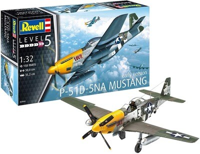

We competently and quietly provide kits for people on any budget without any fuss. Supplied new kits by : Airfix, Revell, Tamiya, ICM, Ryefield, Roden, Italieri and many more. We specialise in locating and securing rare kits, new kits, Collections, and pre-loved kits from nearly all manufacturers & Countries ; We also complete builds and/or dioramas (dynamic or static display) upon commission.We competently and quietly provide kits for people on any budget without any fuss. Supplied new kits by : Airfix, Revell, Tamiya, ICM, Ryefield, Roden, Italieri and many more. We specialise in locating and securing rare kits, new kits, Collections, and pre-loved kits from nearly all manufacturers & Countries ; We also complete builds and/or dioramas (dynamic or static display) upon commission.We competently and quietly provide kits for people on any budget without any fuss. Supplied new kits by : Airfix, Revell, Tamiya, ICM, Ryefield, Roden, Italieri and many more. We specialise in locating and securing rare kits, new kits, Collections, and pre-loved kits from nearly all manufacturers & Countries ; We also complete builds and/or dioramas (dynamic or static display) upon commission.We competently and quietly provide kits for people on any budget without any fuss. Supplied new kits by : Airfix, Revell, Tamiya, ICM, Ryefield, Roden, Italieri and many more. We specialise in locating and securing rare kits, new kits, Collections, and pre-loved kits from nearly all manufacturers & Countries ; We also complete builds and/or dioramas (dynamic or static display) upon commission.We competently and quietly provide kits for people on any budget without any fuss. Supplied new kits by : Airfix, Revell, Tamiya, ICM, Ryefield, Roden, Italieri and many more. We specialise in locating and securing rare kits, new kits, Collections, and pre-loved kits from nearly all manufacturers & Countries ; We also complete builds and/or dioramas (dynamic or static display) upon commission.